Astra
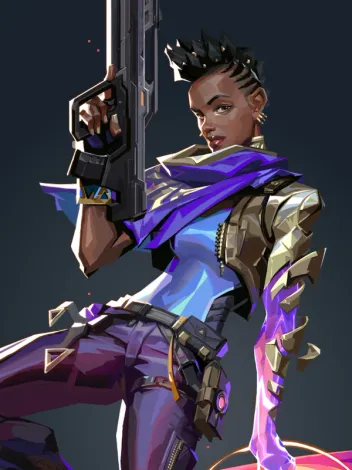
Astra, a Agente ganense, utiliza energias cósmicas para moldar o campo de batalha a seu bel-prazer. Com total domínio da sua forma astral e um talento estratégico nato, ela está sempre anos-luz à frente dos inimigos.
Breach

Breach, o homem-biônico sueco, dispara poderosos jatos cinéticos para forçar a abertura de um caminho pelo território inimigo. O dano e a interrupção que ele causa garantem que nenhuma luta seja justa.
Brimstone

Vindo diretamente dos EUA, o arsenal orbital do Brimstone garante que o esquadrão dele sempre esteja em vantagem. Sua capacidade de oferecer utilitários com precisão e segurança faz dele um comandante inigualável na linha de frente.
Chamber
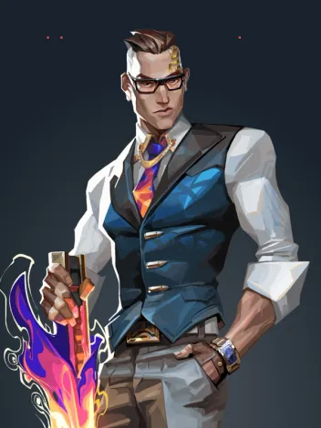
Bem-vestido e armado até os dentes, o criador de armas francês Chamber coloca os inimigos para correr com precisão mortal. Use e abuse do arsenal personalizado dele para segurar posições e abater inimigos de longe, criando a defesa perfeita para qualquer plano.
Chyper
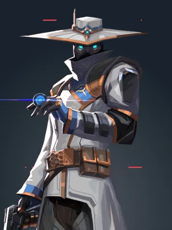
Cypher, um vendedor de informações do Marrocos, é uma verdadeira rede de vigilância de um homem só que fica de olho em cada movimento dos inimigos. Nenhum segredo está a salvo. Nenhuma manobra passa despercebida. Cypher está sempre vigiando.
Clove
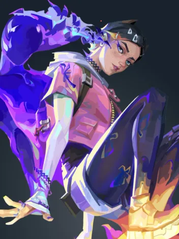
Clove, ume encrenqueire da Escócia, vai desorientar os inimigos tanto no calor do combate quanto no frio da morte. Jovem e imortal, elu mantém os inimigos confusos até do além-túmulo: momentos após a morte, elu retorna à vida.
Deadlock
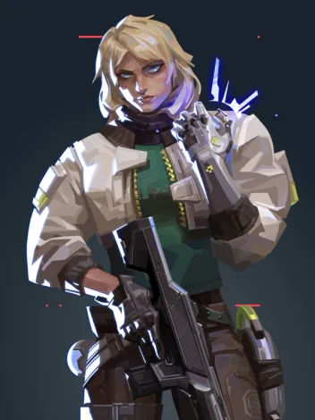
A agente norueguesa Deadlock posiciona uma gama de nanofios de alta tecnologia para proteger o campo de batalha até mesmo do ataque mais letal. Ninguém escapa do seu olhar vigilante. Ninguém sobrevive à sua ferocidade implacável.
Fade
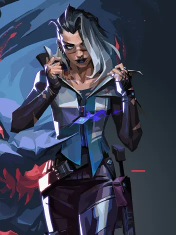
Fade, uma caçadora de recompensas turca, usa o poder dos pesadelos para capturar os segredos dos inimigos. Personificando o próprio terror, ela persegue os alvos e revela seus medos mais profundos para, depois, destruí-los na escuridão.
Gekko
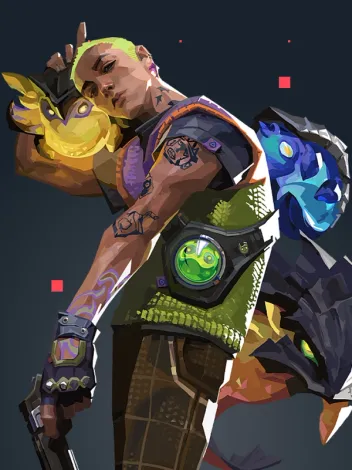
Gekko, de Los Angeles, lidera um grupo muito unido de criaturas caóticas. Seus amigos atropelam tudo, tirando os inimigos do caminho. Depois, Gekko corre atrás deles para reagrupá-los e reiniciar o processo.
Harbor
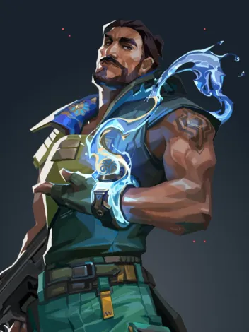
Vindo do litoral indiano, Harbor entra em campo com a força da tormenta, empunhando tecnologia ancestral com domínio sobre a água. Ele libera corredeiras espumantes e ondas esmagadoras para proteger seus aliados ou atacar aqueles que se opõem a ele.
Iso
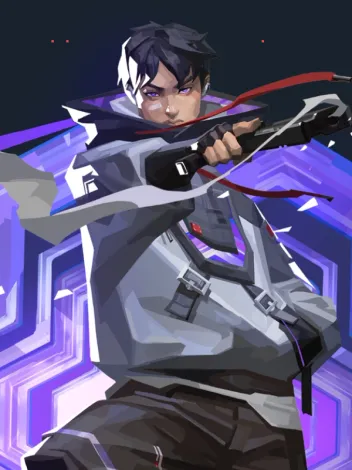
Iso é um mercenário chinês que entra em estado de fluxo para desmantelar os oponentes. Ele reconfigura a energia do ambiente para se proteger de balas e avança totalmente focado em direção ao próximo duelo até a morte.
Jett
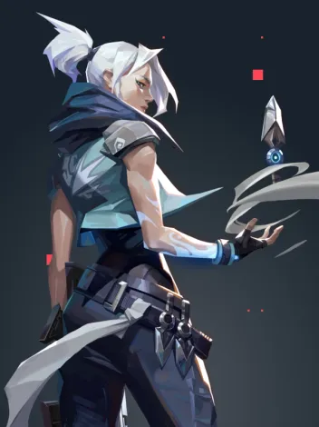
Representando a Coreia do Sul, sua terra natal, Jett tem um estilo de luta ágil e evasivo que permite que ela assuma riscos como ninguém. Ela corre em meio a qualquer confronto, cortando os inimigos antes mesmo que eles percebam quem ou o que os atingiu.
Kay/o
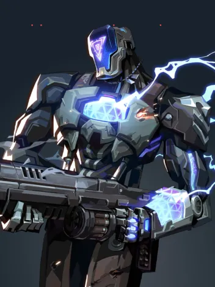
KAY/O é uma máquina de guerra construída com um único propósito: neutralizar Radiantes. Ele é capaz de Suprimir habilidades inimigas, anulando a capacidade de contra-ataque dos adversários e dando a si e a seus aliados uma vantagem essencial em combate.
Killjoy
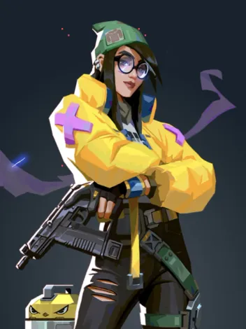
Killjoy, uma alemã genial, defende posições-chave no campo de batalha facilmente com seu arsenal de invenções. Se o dano causado por seu equipamento não der cabo dos inimigos, os efeitos negativos de seus queridos robôs darão conta do recado.
Neon
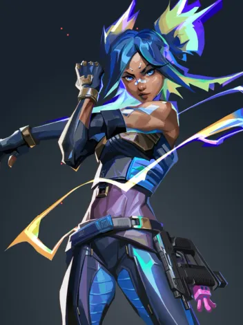
Neon, nossa Agente filipina, avança em velocidades incríveis, descarregando surtos de radiância bioelétrica tão rapidamente quanto seu corpo consegue gerá-los. Ela corre à frente para pegar os inimigos de surpresa, abatendo-os mais rápido do que um raio.
Omem
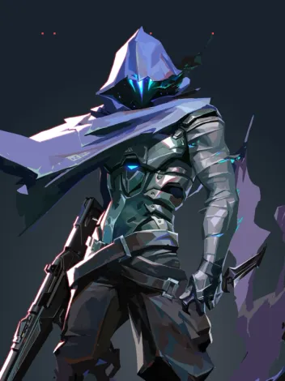
Omen, uma lembrança fantasmagórica, caça nas sombras. Ele cega os inimigos, teleporta-se pelo campo e deixa a paranoia assumir o controle enquanto o adversário tenta descobrir de onde virá seu próximo ataque.
Phoenix
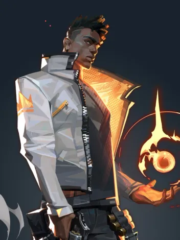
Chegando com tudo diretamente do Reino Unido, o poder estelar de Phoenix reluz em seu estilo de luta, incendiando o campo de batalha com luz e estilo. Tendo ajuda ou não, ele entra na luta como e quando achar que deve.
Raze
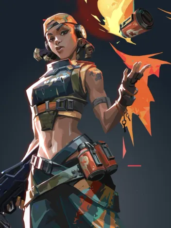
Raze chega do Brasil com uma explosão de carisma e armas enormes. Com seu estilo de jogo "porradeiro", ela é craque em desentocar inimigos entrincheirados e limpar espaços apertados com uma bela dose de BUUUM!
Reyna
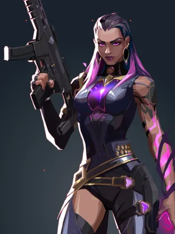
Criada no coração do México, Reyna domina o combate individual, destacando-se a cada abate efetuado. Sua capacidade só é limitada por sua própria perícia, tornando-a bastante dependente de desempenho.
Sage

Como uma verdadeira fortaleza chinesa, Sage traz segurança para si mesma e para a equipe aonde quer que vá. Capaz de reviver aliados e rechaçar investidas agressivas, ela oferece um centro de calmaria em meio ao caos da batalha.
Skye
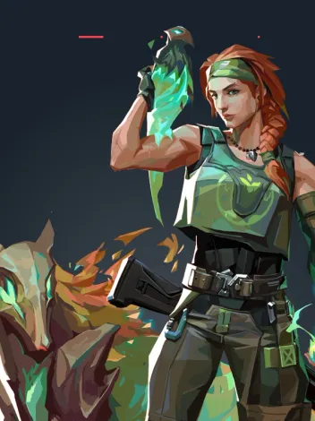
Mandando um salve direto da Austrália, Skye e sua equipe de feras desbravam territórios hostis. Com seus poderes de cura e suas criações que partem pra cima dos inimigos, qualquer equipe ficará mais forte e mais segura tendo Skye como aliada.
Sova
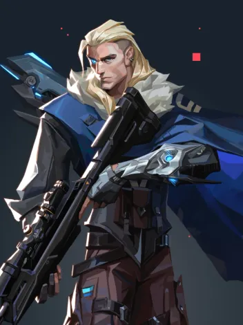
Nascido sob o eterno inverno das tundras russas, Sova rastreia, encontra e elimina inimigos com eficiência e precisão implacáveis. Seu arco personalizado e suas habilidades inigualáveis de reconhecimento garantem que nenhuma presa escape.
Viper
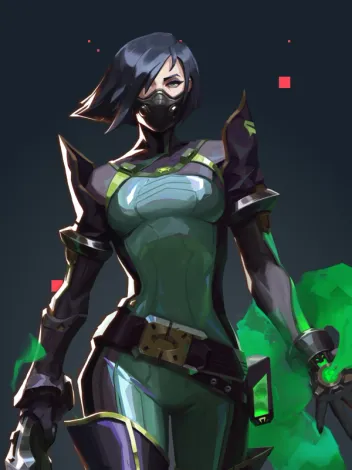
Viper, a química dos Estados Unidos, emprega uma variedade de dispositivos químicos venenosos para controlar o campo de batalha e prejudicar a visão do inimigo. Se as toxinas não matarem a presa, seus jogos mentais certamente o farão.
Yoru
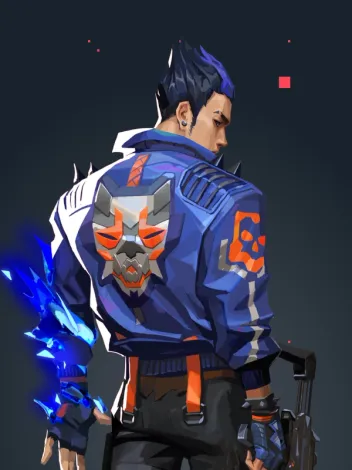
Yoru, nativo do Japão, abre fendas na realidade para infiltrar as linhas inimigas sem ser visto. Ele usa tanto artimanhas quanto táticas agressivas, e os alvos são abatidos sem saber de onde o ataque veio.